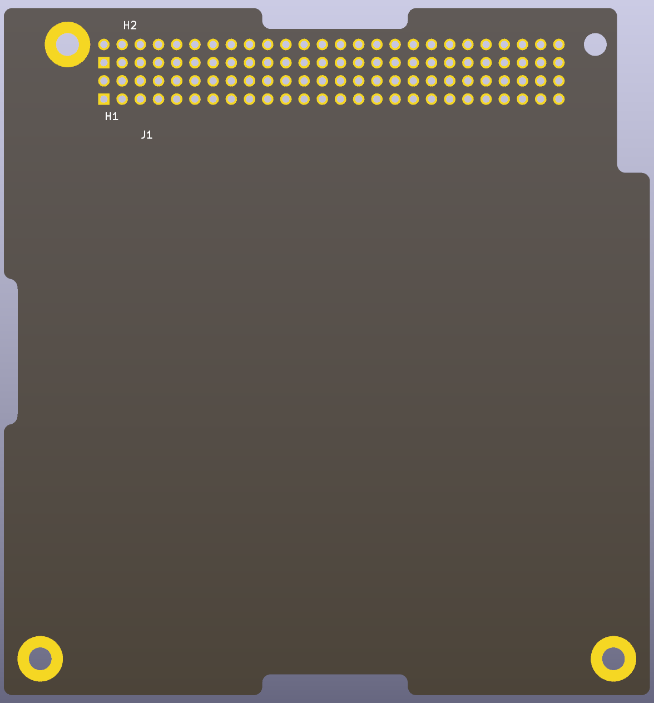

A 90.17 mm x 95.89 mm CubeSat Kit user module in the extended "Slot 1" pattern of Pumpkin's CubeSat Kit PCB specification (810-00253 rev B2): the board outline, the H1 and H2 2x26 bus headers on the PC/104 grid and four mounting holes. Slot 1 has no cutout for the 2nd separation switch; where a module may sit at either position, use the Slot 0 template.
The schematic holds the bus as one connector, J1: unit A is H1 (pins 1-52) and unit B is H2 (pins 53-104), every pin unconnected. Wire the pins the module uses and put a no-connect flag on the rest. The board keeps copper 1.27 mm from the edge, as the specification recommends.
The symbol and the footprint are in the project's own
CubeSat_PC104 libraries, so nothing else has to be installed.

From cubesat-pc104-kicad. CERN-OHL-P-2.0.